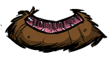
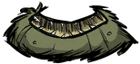

| Wormhole | |
|  |
|
| Sanity Loss | -15 |
| Renewable? | Can't be destroyed. |
| DebugSpawn | "wormhole" |
| Sick Wormhole | |
|  |
|
| Sanity Loss | -15 |
| Renewable? | No |
| DebugSpawn | "wormhole_limited_1" |
| “ | MY INPUTS ARE FULL OF SLIME | ” |
| –WX-78 | ||
Traveling through a Worm Hole causes a Sanity loss of 15. Sanity can be quickly drained by repeatedly jumping into them. Smallbirds, Pigs, Mandrakes and other followers will follow any Characters through a worm Hole, as will Chester if the Eye Bone is in your inventory. Many objects, such as Food, Gravedigger Items, and Wooden Thing components can be dropped into the Worm Hole, and will be spat out the other end.
Sick Worm Holes are dying and can only be used for one-way travel. Once these Worm Holes are used their "exit" shrivels up and dies, preventing you from traveling back. They look similar to their healthy counterparts but their "skin" and mouth are a more yellow/green tint as opposed to a healthy red. They only spawn in the "Two Worlds" chapter in Adventure Mode.
| Naturally spawning world objects | |
| Plants | Berry Bush • Carrot • Cave Banana Tree • Cave Lichen • Flower (Evil Flower, Fern) • Grass • Light Flower • Lureplant • Mandrake • Mushrooms • Mushtree • Plant • Reeds • Sapling • Spiky Bush • Tree • Totally Normal Tree |
| Mobs and Mob Housing | Beehive • Hound Mound • Pond • Pig Fortress • Pig House • Pig King • Pig Torch • Rabbit Hutch • Rundown House • Slurtle Mound • Spider Den • Spilagmite • Splumonkey Pod • Tallbird Nest • Walrus Camp • Worm Hole |
| Inanimate | Ancient Pseudoscience Station • Ancient Statue • Basalt • Boulder • Gramaphone • Grave • Harp Statue • Headstone • Suspicious Dirt Pile • Marble Pillar • Marble Tree • Maxwell's Door • Maxwell Statue • Maxwell's Light • Merm Head • Nightmare Light • Nightmare Lock • Nightmare Throne • Obelisk • Ornate Chest • Pig Head • Pillars • Relic • Sinkhole • Skeleton • Stalagmite • Touch Stone • Thulecite Wall |
| Things | Box Thing • Crank Thing • Eye Bone • Metal Potato Thing • Ring Thing • Wooden Thing |
{kind=link}
{kind=link}
{kind=link}
{kind=link}
{kind=link}